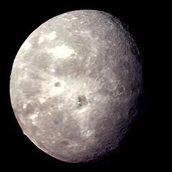

Bulan Terluar Raksasa Uranus
Oberon adalah satelit alami terbesar kedua sekaligus bulan terluar dari sistem bulan utama planet Uranus. Ditemukan oleh William Herschel pada tahun 1787, Oberon dinamai dari karakter Raja Peri dalam karya Shakespeare. Permukaan Oberon sangat tua, gelap, dan dipenuhi oleh kawah tabrakan berukuran raksasa yang dikelilingi oleh material berwarna kecokelatan serta ngarai patahan tektonik kuno (*chasmata*). Mayoritas potret dekat Oberon diperoleh saat wahana Voyager 2 melintas pada Januari 1986. Keberadaan puncak gunung terisolasi setinggi 11 km di tepi permukaannya menjadi bukti aktivitas geologi masa lalu yang kini telah mati dan membeku.